PHIL 452 · Modal Logic
Agents locate themselves in the space of epistemic alternatives by ruling out states in light of new information.
Recall your phone: nothing you know enables you to distinguish \(s_1\) from \(s_2\).
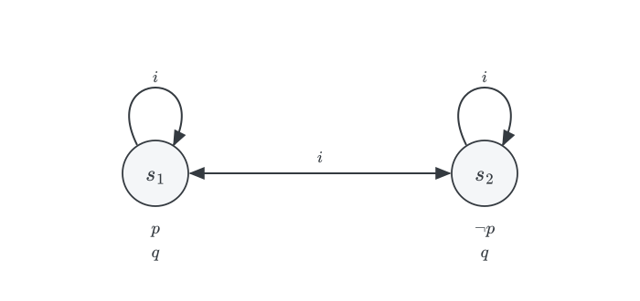
Knowledge locates the actual state within the space of live alternatives.
To learn a proposition is to rule out some alternatives where it fails. To learn that your phone has been stolen is to rule out \(s_2\).
We want to articulate a model of how public information changes what agents know.
Three children, \(a\), \(b\), and \(c\), come in from playing outside. Two of them, \(a\) and \(c\), have mud on their foreheads. No child can see their own forehead, but each can see the others’.
A. The guardian makes an announcement:
At least one of you is muddy.
B. She asks:
If you know you are muddy, please step forward.
No one steps forward.
C. She repeats the request.
\(a\) and \(c\) step forward, \(b\) stays behind.
Three questions:
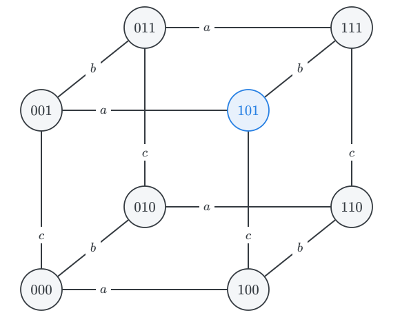
A state records who is muddy, in the order \(a, b, c\). The actual state is \(101\).
Eight states. An edge labelled \(i\) joins two states that child \(i\) cannot tell apart.
Two states are \(i\)-linked iff they differ only in \(i\)’s forehead: \(i\) sees everything else.
Each \(R_i\) is reflexive; the loops are omitted.
\(p_1, p_2, p_3\) state that \(a\), \(b\), \(c\), respectively, are muddy.
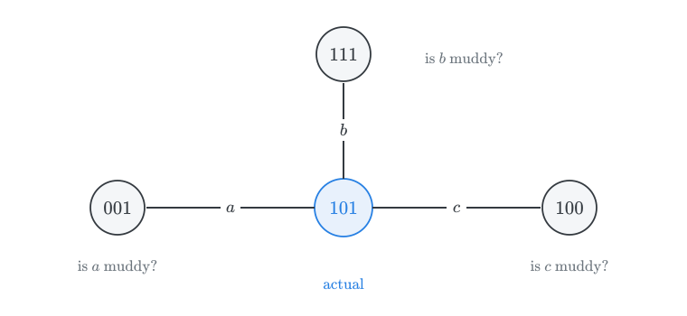
\(a\) cannot rule out \(001\): \(\neg \textsf{K}_a p_1 \wedge \neg \textsf{K}_a \neg p_1\). Yet \(\textsf{K}_a p_3\) and \(\textsf{K}_a \neg p_2\).
Each child is in your situation with the phone; they do not know whether they are muddy.
The accessibility relations are reflexive and symmetric, and transitive: each \(R_i\) is an equivalence relation, so the logic of each child’s knowledge is \(\textsf{S5}\).
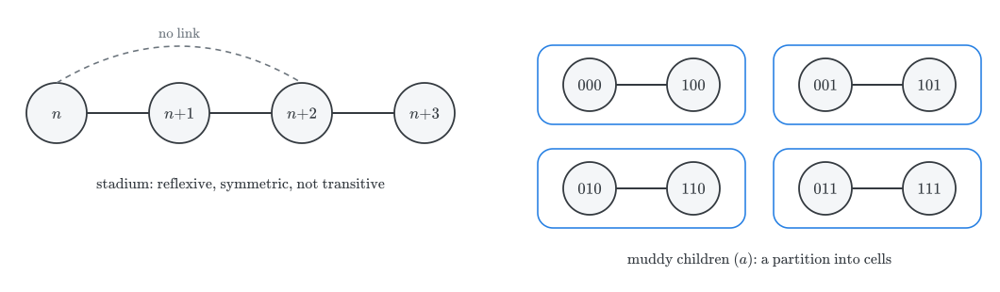
States are indistinguishable if they look alike to the child, and that is an equivalence relation.
Whether \(\textsf{B}\), \(\textsf{4}\), and \(\textsf{5}\) are appropriate depends on the source of the information.
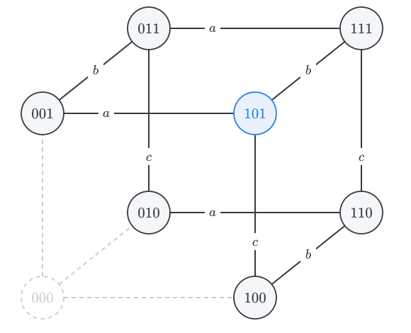
A rules out \(000\).
But no child regarded \(000\) as a live option: from \(101\), each child sees some muddy forehead.
So A does provides no new information about who is muddy.
It nevertheless makes a difference: the states adjacent to \(000\) have changed. Child \(c\) at \(001\) now knows she is muddy.
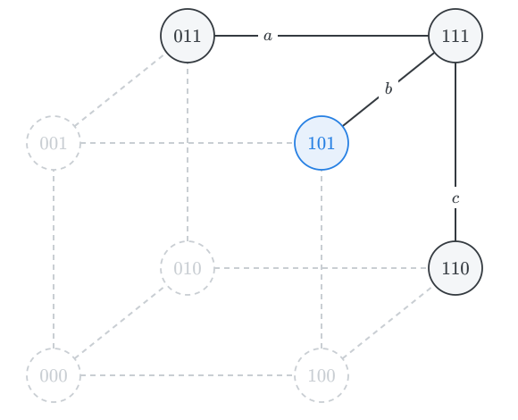
No one steps forward: each child learns that no child knows that they are muddy.
At a state with exactly one muddy child, that child sees no mud on the others. After A, she would know she is muddy, and would step forward.
So \(100\), \(010\), and \(001\) are ruled out.
At \(101\), \(a\) can no longer consider \(001\), and \(c\) can no longer consider \(100\).
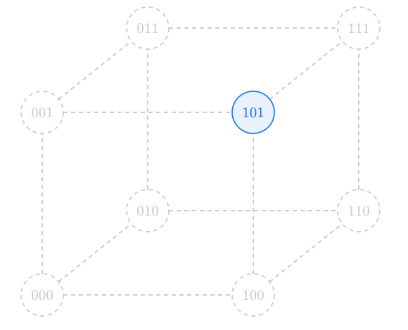
\(a\) and \(c\) step forward: they find no live alternative at which they are clean.
\(b\) stays behind: she still cannot tell \(101\) from \(111\).
The fact that \(a\) and \(c\) step forward and \(b\) stay behind rules out every alternative to \(101\).
At \(111\), for example, no one would step forward.
Now everyone knows who is muddy.
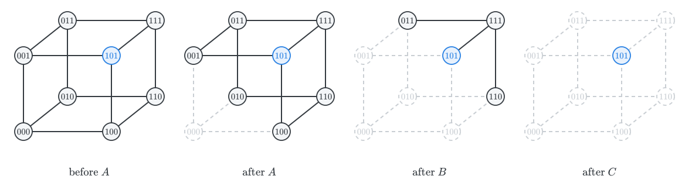
Each step eliminates states. Nothing is ever added.
With \(k\) muddy children among \(n\), no one steps forward until the \(k\)-th request, at which point exactly the \(k\) muddy children step forward.
The diagrams suggest an update mechanism: once \(\varphi\) is announced, eliminate all \(\neg \varphi\)-states.
If \(M = (W, \{R_i : i \in I\}, V)\), the update of \(M\) by \(\varphi\) is:
\(M|\varphi = (W', \{R'_i : i \in I\}, V')\), where:
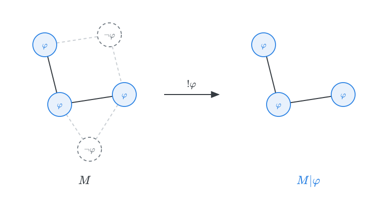
Add an operator \([!\varphi]\), where \([!\varphi]\psi\) is read: after the announcement of \(\varphi\), \(\psi\).
\[ \begin{array}{lll} M, s \Vdash [!\varphi]\psi & \text{iff} & M, s \Vdash \varphi \ \text{only if} \ M|\varphi, s \Vdash \psi \end{array} \]
The antecedent reflects the assumption that announcements are true: a false announcement cannot be made, so \([!\varphi]\psi\) is vacuously true where \(\varphi\) fails.
\([!\varphi]\) is a box-like operator, but it does not quantify over accessible states of one model. It shifts the evaluation to a new model.
A is the announcement \[p_1 \vee p_2 \vee p_3\] The effect of the update by that formula is to remove \(000\) from the initial model.
The silence after B amounts to an announcement that no child knows that they are muddy: \[\neg \textsf{K}_a p_1 \wedge \neg \textsf{K}_b p_2 \wedge \neg \textsf{K}_c p_3\] The effect of the update is to remove states at which exactly one child is muddy.
The response after C announces that \(a\) and \(c\), but not \(b\), know that they are muddy. \[\textsf{K}_a p_1 \wedge \neg \textsf{K}_b p_2 \wedge \textsf{K}_c p_3\] The effect of that update is to rule out \(110\), \(011\), and \(111\) in the updated model.
The announcement A makes concerns the mud. B and C concern what the children know.
The children learn from each other’s ignorance: \(a\) learns that she is muddy from the fact that \(c\) did not know that \(c\) was muddy.
The same announcement has different effects at different times: the second request is informative because the model has changed in the meantime.
Suppose I tell you:
your phone has been stolen, but you do not know it.
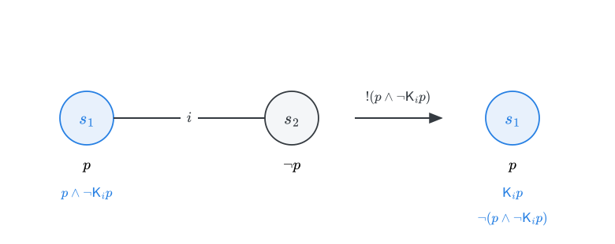
The announcement is true at \(s_1\), and the update removes \(s_2\).
In the updated model, you know \(p\), and the formula becomes false: \[[!(p \wedge \neg \textsf{K}_i p)] \neg (p \wedge \neg \textsf{K}_i p)\]
This is the dynamic counterpart of the fact that Moorean sentences are unknowable: they can be announced, but not learned.
Recall van Benthem’s reading of \(\Diamond \textsf{K} \varphi\): one could come to know \(\varphi\) by learning something.
In the present framework: \(\varphi\) is knowable at \(s\) iff for some \(\psi\) true at \(s\), \(M, s \Vdash [!\psi]\textsf{K}_i \varphi\).
Truths are often knowable: when \(\varphi\) contains no epistemic operators, announce \(\varphi\) itself: \([!\varphi]\textsf{K}_i\varphi\), and you will come to know \(\varphi\).
But the Moorean truth \(p \wedge \neg \textsf{K}_i p\) is not knowable. Once you learn that \(p\), the second conjunct becomes false.
This matches the semantic diagnosis of Fitch: some truths concern the agent’s epistemic situation, and they cannot be learned without changing the epistemic situation of the subject.
The update framework provides a new view of the unexpected examination paradox.
Gerbrandy (2007): the exam is either on Monday (\(m\)) or on Tuesday (\(t\)), but not both. On Sunday, the student cannot tell the two states apart.
What does it mean for the exam to be a surprise?
If the exam is on Monday, the student must not know on Sunday that it is on Monday.
If it is on Tuesday, the student must not know it is on Tuesday even after learning, on Monday, that there was no exam that day.
The teacher’s announcement is therefore: \[S \ = \ (m \wedge \neg \textsf{K}_i m) \vee (t \wedge [!\neg m]\neg \textsf{K}_i t)\]
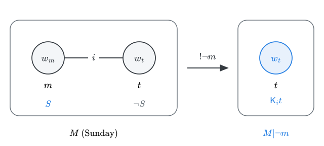
At \(w_m\): \(m\) is true and \(w_t\) is still open, so \(\neg \textsf{K}_i m\) holds, and \(S\) is true.
At \(w_t\): the update by \(\neg m\) leaves only \(w_t\), so the student would know \(t\), and \(S\) is false.
So the students’ first step is sound: if the announcement is true, the exam is not on Tuesday.
Now suppose the teacher announces \(S\), and the students take her at her word.
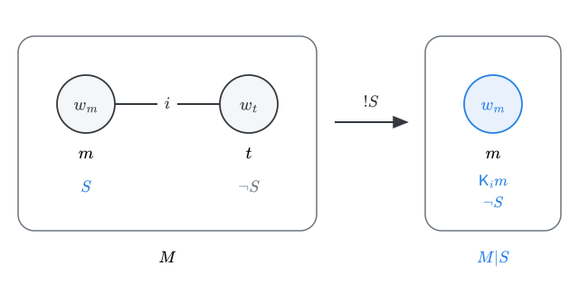
The update by \(S\) removes \(w_t\) and leaves only \(w_m\). At \(w_m\), students know \(m\), so \(S\) is false: \[M, w_m \Vdash S \wedge [!S]\neg S\]
The announcement can be true when made, but it cannot survive being accepted.
With three days, let \(d_n\) say that the exam is on day \(n\): \[ S \ = \ (d_1 \wedge \neg \textsf{K}_i d_1) \ \vee \ (d_2 \wedge [!\neg d_1] \neg \textsf{K}_i d_2) \ \vee \ (d_3 \wedge [!\neg d_1][!\neg d_2] \neg \textsf{K}_i d_3) \]
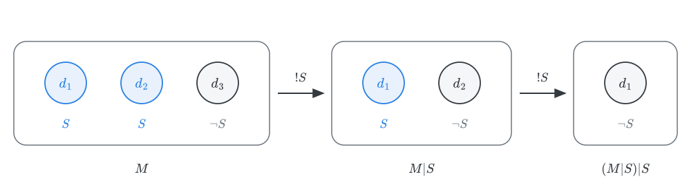
The first elimination remains sound: \(S\) is false at \(d_3\), so the update by \(S\) removes it.
But in \(M|S\), \(S\) itself fails at \(d_2\), so the student no longer knows \(S\): \[M, d_1 \Vdash [!S](S \wedge \neg \textsf{K}_i S)\]
The backward induction proceeds as if the student could keep eliminating days on the strength of an announcement she continues to know. That assumption is exactly what fails.
The model makes precise a diagnosis due to Kripke (2011).
The students may know the announcement when it is made. What they cannot do is retain that knowledge as they acquire more information.
As the exam-free days go by, they forget nothing, but what they learn undermines their knowledge of the announcement.